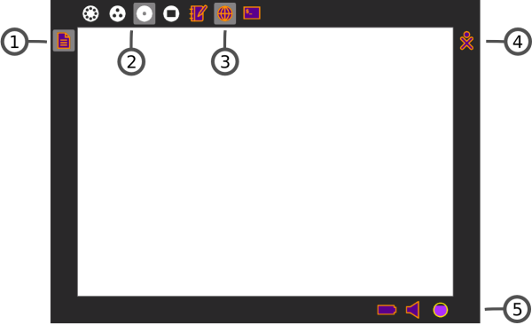

| Sugar: la Vue Activité | Index | Sugar: le Journal |
Le Cadre, que vous pouvez obtenir depuis n'importe quelle Vue, contient un presse-papiers, de nouvelles invitations ou notifications, vos amis, les Activités en cours ainsi que des informations globales utilisées par toutes les Vues.

1. Presse-papiers
Le côté gauche du Cadre sert de presse-papiers. Vous pouvez mettre ou prendre des objets tels que du texte et des images du, ou bien vers, le Presse-papiers ainsi que des, ou bien vers, les Activités.
2. Menu Zoom
Le menu Zoom se trouve sur le côté gauche, en haut de l'écran. Utilisez-le pour naviguer entre les quatre Vues Sugar : Voisinage, Groupe, Accueil et Activité.
3. Liste des Activités ouvertes
La liste des Activités ouvertes apparaît dans le bord supérieur du Cadre. L'Activité en cours est surlignée (le Journal apparaît toujours ici).
Il peut arriver qu'un cercle sans symbole apparaîsse ici. Il représente, en général, une session additionnelle plein-écran, commencée par une Activité, dont l'icône apparaîtra toujours dans le bord supérieur du Cadre.
Les invitations apparaîtront également à cet emplacement du Cadre. Elles apparaîtront en tant qu'icônes dans la couleur de la personne qui vous l'aura envoyée.
4. Liste des amis actifs
Les personnes avec qui vous êtes en train de collaborer apparaîtront dans le bord droit du Cadre.
5. Statut du système
La batterie, le haut-parleur ainsi que le statut réseau apparaîtront dans le bord inférieur du Cadre.
Vous pouvez amener des objets depuis le presse-papiers vers les Activités. Un menu déroulant vous permet également d'effacer des objets du presse-papiers, de les ouvrir dans une Activité ou encore de les sauvegarder (de les conserver) dans votre Journal.
| Sugar: la Vue Activité | Index | Sugar: le Journal |